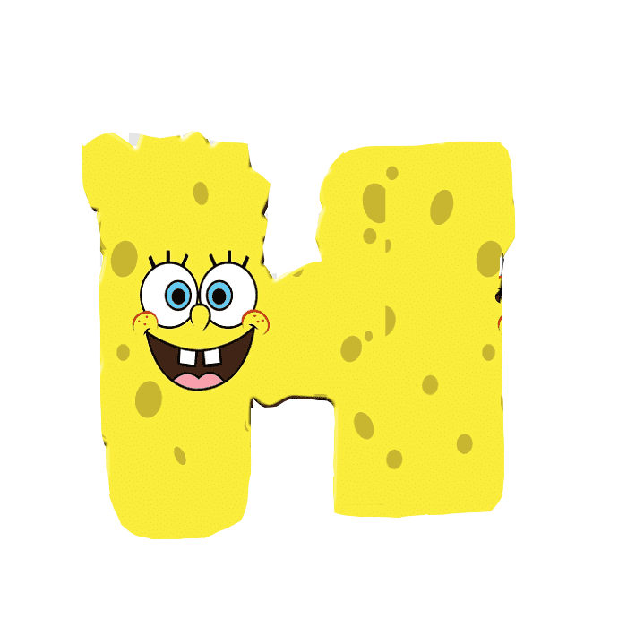

|  | есмотря на то, что водительские права Губки Боба говорят, что его день рождения — 14 июля 1986 года, что делало персонаж тринадцатилетним к моменту официальной премьеры 17 июля 1999 года, Хилленберг пошутил, что он даже в пятьдесят ещё в «губчатом возрасте» (англ. sponge years). Он объяснил, что в принципе Губка Боб не имеет конкретного возраста, хотя он достаточно взрослый, чтобы стоять на своём и ходить в Лодочную школу. Решение принять Губку Боба в школу вождения катеров было принято в связи с просьбой «Nickelodeon», чтобы персонаж посещал школу. |